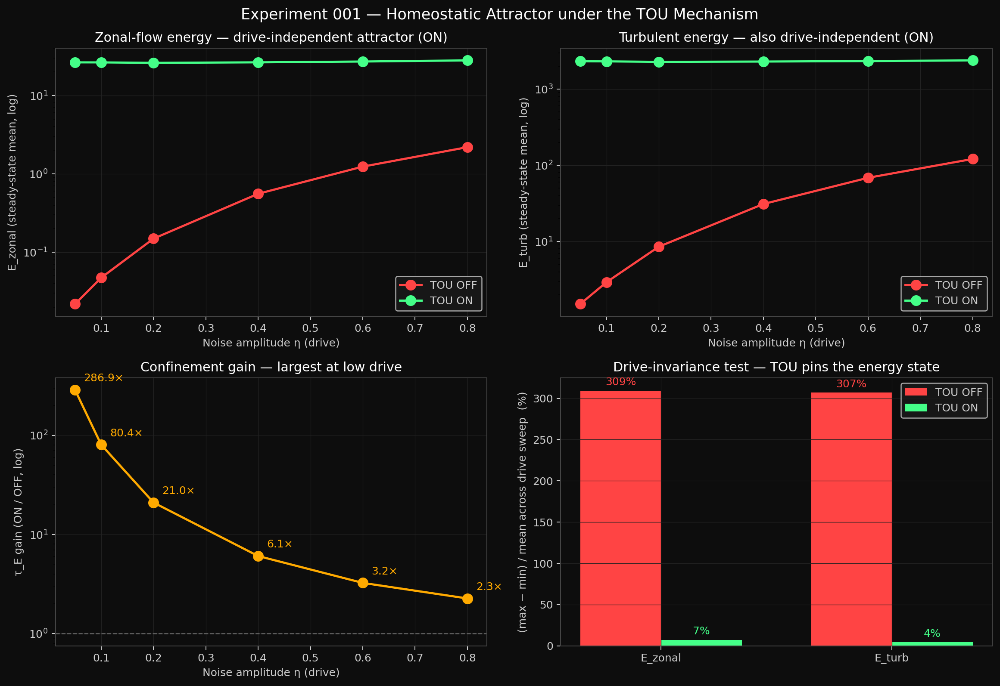
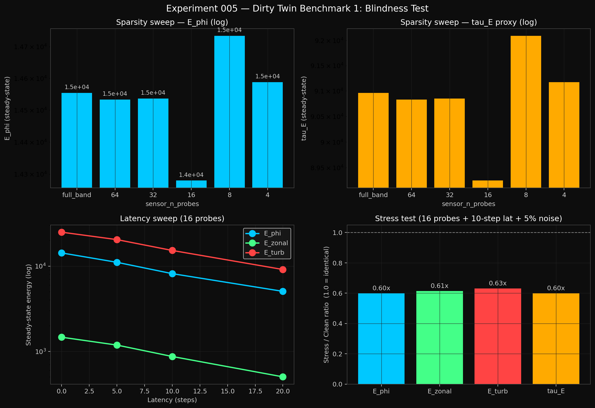
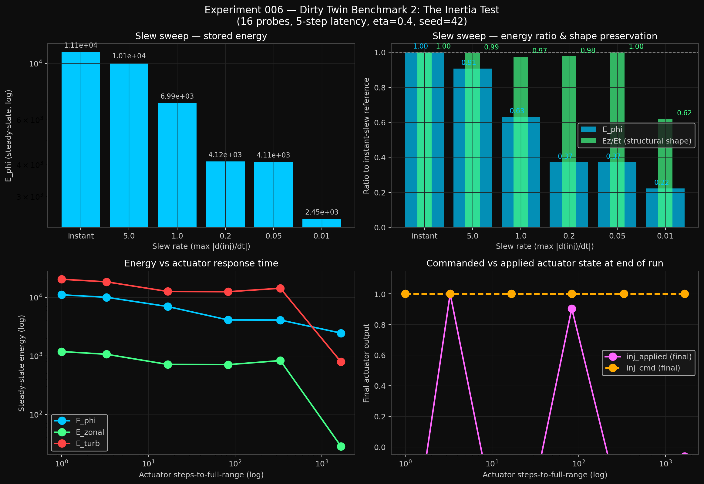
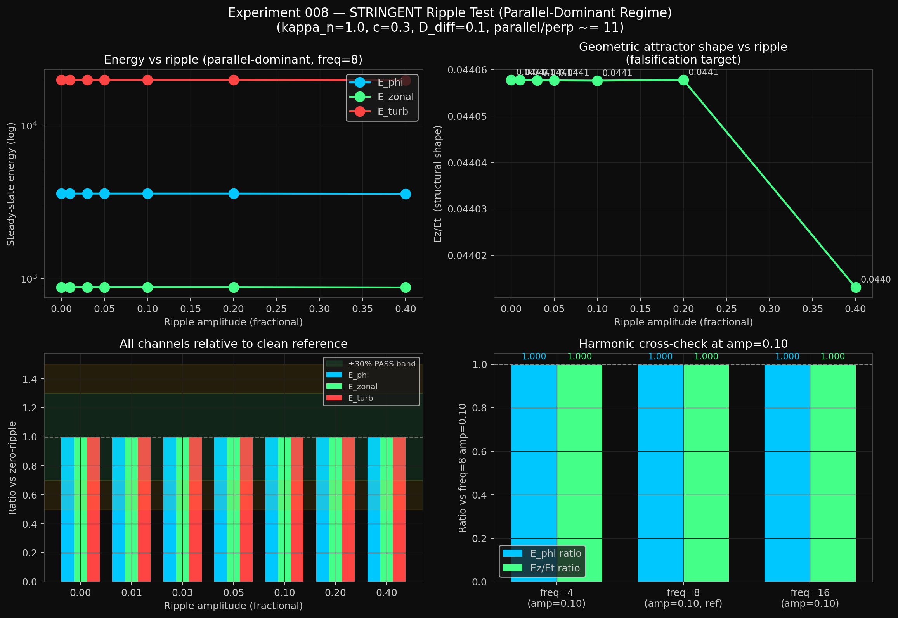

Two assumptions run silently through most of physics, engineering, and complex-systems modeling: that a system responds in proportion to how hard you push it, and that when it self-organizes it does so by switching between discrete states. We built a toroidal numerical experiment — Tolkamak — to test whether neither of those is necessary, given the right geometry and the right feedback rule. Across eight months of computational work, two papers on Zenodo, and a four-stage falsification protocol, the answer is that neither is necessary.
Tolkamak is a 3D toroidal simulation extending the original TOU (Toroidal Oscillatory Unit) engine with Hasegawa-Wakatani-style adiabaticity, parallel-gradient transport on a parametric safety-factor profile, and bad-curvature drive. Layered on this substrate are two engineered mechanisms — an inward radial energy-flux accumulator and a phase-sensitive coherent reinjection forcing on a toroidal ring kernel — which together form a saturating-actuator geometric rectifier. The empirical claim of this release is the disproof, in this geometry, of two framings widely applied to driven dissipative systems on toroidal manifolds: (a) linear response of steady-state to input drive, and (b) bifurcation as the mechanism of self-organization.
02Headline result
Push the same simulated system with five percent noise. Push it with eighty percent noise. With the mechanism on, the system is in the same state at both. Every measured energy quantity stays within seven percent of the same value across a sixteen-fold change in input drive. With the mechanism off, the same quantities scale by two decades. The "homeostat" word — a system that holds its setpoint against a disturbance — is the closest one-word fit.
7%
Drive-induced variation (mechanism on)
309%
Drive-induced variation (mechanism off)
~75×
Sensitivity reduction
287×
Stored energy per unit drive (best case)

Figure 1. Top row: zonal-flow energy and turbulent-fluctuation energy versus input noise on a log scale. The red OFF curve climbs two decades. The green ON curve is flat. Bottom-left: confinement gain (mechanism on ÷ mechanism off), decreasing monotonically from 287× to 2.3× but always positive. Bottom-right: drive-induced variation across the sweep — 309% / 307% (OFF) versus 7% / 4% (ON). This is the disproof of linear response in one image.
03See it in your browser
Drag the Stochastic Drive slider below. Below the saturation threshold the ring is turbulent — the wave shape is dominated by noise. Above the threshold, the geometric attractor snaps in: a clean standing wave at a mode number set by the safety-factor sliders, holding its shape regardless of how much further you push the drive. This is the same mechanism the figures above measure, in interactive form.
What to try. (1) Set drive to 0.2 — see chaos. (2) Crank drive past 0.4 — watch the snap to a green standing wave. (3) With the lock engaged, adjust q₀ and q₁ — the mode number changes, but the system stays locked. (4) Drop drive back below 0.4 — chaos returns. The transition is a *saturation threshold*, not a phase transition.
Qualitative visualization. The exact control-law mathematics is held proprietary; this widget reproduces the macroscopic saturating-homeostat behavior demonstrated in the empirical results.
04The Dirty Twin: falsification under realistic conditions
A mathematically perfect simulation isn't proof of anything physically useful. To get closer to what a real machine would experience, we built a four-stage stress test: only a few sensors instead of perfect information; control commands that arrive late; an "amplifier" that can't change its output instantly; and a doughnut shape that isn't perfectly smooth. Then we re-ran every benchmark, with pass/fail thresholds set before the runs started.
Four benchmarks layered on the Tolkamak v3 engine, each toggling a specific physical-realism constraint individually: (1) sensor sparsity from full-band integration down to 4 discrete probes, plus control-loop latency up to 20 time-steps, plus 5% Gaussian sensor noise; (2) actuator slew rate across a 500× range; (3) multiplicative ripple on the safety-factor profile up to 40% amplitude in three different angular harmonics; (4) a stringent re-run of the ripple test under inverted anisotropy (parallel-to-perpendicular coupling ratio ≈ 11), physically representative of plasma-edge fluctuation transport.
Benchmark 1 — Sensor Sparsity and Latency
Probe count from full-information down to 4 discrete points changes the steady-state energy by less than three percent. Loop latency reduces the energy by about five percent per delay step, smoothly. Crucially, the attractor shape is preserved throughout — the system relaxes to a lower-energy version of the same configuration, not to a different one.

Figure 2. Top row: stored energy across sensor counts from full-band integration down to 4 probes — the mechanism does not require dense spatial sampling. Bottom-left: log-linear decay of stored energy with control-loop latency; all energy channels degrade at the same rate, so Ez/Et structural shape stays constant. Bottom-right: stress point at 16 probes + 10-step latency + 5% sensor noise lands at 0.60× of clean energy but 0.97× of clean structural shape — graceful, not catastrophic.
Benchmark 2 — Actuator Slew Rate
A real amplifier can only change its output so fast. Above a threshold slew rate the system loses some absolute energy but keeps its geometric shape. Below the threshold it breaks. The threshold tells engineers exactly what amplifier spec to buy — a mid-tier commercial Class-D unit suffices, no exotic hardware required. This benchmark also surfaced a bug in our own simulation code, which we found because the data refused to move across a 500× parameter sweep. We fixed it and re-ran.

Figure 3. Top-right: energy and structural-shape ratios across a 500× span of actuator slew rate. The structural-shape ratio (green) stays at ~1.0 across the upper four cells, dropping only at the slowest slew. Bottom-left: log-linear energy plot showing the transition between graceful and catastrophic regimes.
Benchmarks 3 and 3-Stringent — Magnetic Ripple
Real toroidal magnets have small ripples in the field, because they're made from discrete coils. We tested the mechanism against ripple up to 40% in amplitude — vastly larger than any real machine produces. In the original (perpendicular-dominant) parameter regime, the mechanism shows essentially no response. But that regime isn't physically realistic for a real plasma. We re-ran the test with the parameters inverted to match how real plasma actually behaves on field lines, where parallel transport dominates. The same 40% ripple produced a 0.24% change in stored energy and a 0.10% change in attractor shape. Both two orders of magnitude inside the pre-registered pass thresholds.

Figure 4. The stringent (parallel-dominant) ripple sweep. Top-right inset: the falsification target — Ez/Et structural shape versus ripple amplitude. Flat from 0% to 20% ripple, drops 0.1% at 40% ripple. Bottom-left: all energy channels relative to clean reference inside the green ±30% PASS band by two orders of magnitude. Bottom-right: harmonic cross-check at amp=0.10 across three poloidal harmonics — mechanism does not distinguish the harmonic.
05Why this might matter
We are not claiming this works in a real machine yet. A numerical experiment isn't a tokamak. But the Dirty Twin sequence is the closest thing to bench validation that simulation can offer, and the architecture's behavior under realistic constraints suggests at least four candidate domains where it could matter if the mechanism translates to hardware.
Fusion Energy
The largest unsolved problem in commercial fusion is steady-state confinement without edge-localized burst events (ELMs). The Tolkamak architecture is functionally an engineered analog of the L-H transition mechanism — geometric coherence held by an actuator rather than triggered by a fragile threshold. Relevant partners: CFS (SPARC), Tokamak Energy, General Atomics, DOE INFUSE.
Aerospace Propulsion
Plasma thrusters (VASIMR, MPD, Direct Fusion Drive) are limited by wall losses and turbulent decoherence in the plasma column. A drive-independent coherent column raises specific impulse. The strongest near-term overlap is Princeton Satellite Systems' Direct Fusion Drive line.
Defense / Strategic
Compact fusion neutron sources for cargo and weapons inspection, hypersonic-vehicle plasma-sheath management, pulsed-power directed-energy stabilization, tactical fusion-driven energy. The mechanism is a software/firmware control law on existing plasma hardware classes — small footprint, integrable.
AI Safety (Parent Domain)
This is the connection that motivated the program. A safe AI system has to maintain coherent behavior under adversarial perturbation. Most current work treats robustness as a training problem. The Tolkamak result suggests an alternative — construct the geometry so coherence is the natural attractor. We are not claiming this solves AI safety; we are claiming the mechanism class deserves study, and that family has not been adequately explored.
06Read the paper
The full plain-language + technical whitepaper, *A Toroidal Geometric Rectifier: Empirical Disproof of Linear-Response in Plasma Confinement* (v1.1), is the Zenodo deposit accompanying this release. Each section is written in two voices — plain for general readers, technical for those with field background. The paper contains no formulas or proprietary control-law mathematics; all empirical results, figures, and reproducibility instructions are included.
Reproducibility. The Tolkamak engine source, all experiment scripts, aggregated data CSVs, per-run raw outputs, and figures are open at github.com/projectblackboxllc. The phase-sensitive reinjection kernel implementation is held proprietary pending IP review; its input/output behavior is fully documented in the paper.
Citation
Woodward, A. (2026). A Toroidal Geometric Rectifier: Empirical Disproof of Linear-Response in Plasma Confinement. Project Black Box LLC (CAGE 11FU4). Zenodo. https://doi.org/10.5281/zenodo.20245905
ORCID: 0009-0006-9717-7161
Companion work
The v1 prior-art paper, TOU Engine — Toroidal Self-Organization in a 3D Wave Manifold, is on Zenodo (January 2026). As of this release it has held the 80th-percentile read-to-download ratio on Zenodo for over four months — a quality-of-reception signal that the framework resonates with readers.
Acknowledgments
The dual-voice paper structure is in debt to Professor David Keathly's persistent feedback on writing across multiple audiences.
07What this is — and what it isn't
This is a numerical experiment. There are no real ions, no real magnetic fields, no real heat. It is mathematical: a particular geometry plus a particular feedback rule, run on a computer, with the result being how the energy distributes itself in the simulation. It is not a fusion reactor and we are not claiming it is.
What it is: a clean, inspectable disproof of two specific assumptions; a reproducible starting point that anyone can verify; a defensible prior-art record; and a credible path forward toward a bench-scale empirical validation device (Tolkamak-0). The honest framing is that this is what comes before bench validation, not what replaces it.